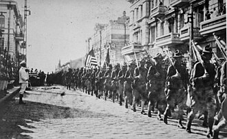

- Diferențe ideologice – SUA promova democrația liberală, economia de piață și libertățile individuale, în timp ce URSS susținea comunismul, planificarea centralizată și dominația partidului unic. Aceste viziuni opuse asupra societății au făcut imposibilă o colaborare reală după 1945.
- Conferințele de la Ialta și Potsdam (1945) – Marile puteri au discutat soarta Europei postbelice, dar acordurile au fost interpretate diferit. Stalin a impus regimuri comuniste în statele eliberate de Armata Roșie, contrar promisiunilor făcute aliaților.
- Doctrina Truman (1947) – SUA s-au angajat să sprijine economic și militar țările amenințate de comunism (inițial Grecia și Turcia), declanșând politica de „containment" – stoparea răspândirii comunismului.
- Planul Marshall (1948) – Programul american de reconstrucție economică a Europei Occidentale, considerat de Moscova o încercare de a atrage statele est-europene în sfera de influență americană. URSS a refuzat și a impus refuzul și sateliților săi.
- Cortina de Fier – Termen folosit de Winston Churchill în 1946 pentru a descrie linia care separa Europa Occidentală de cea Răsăriteană, controlată de Moscova. A devenit simbolul diviziunii continentului.
